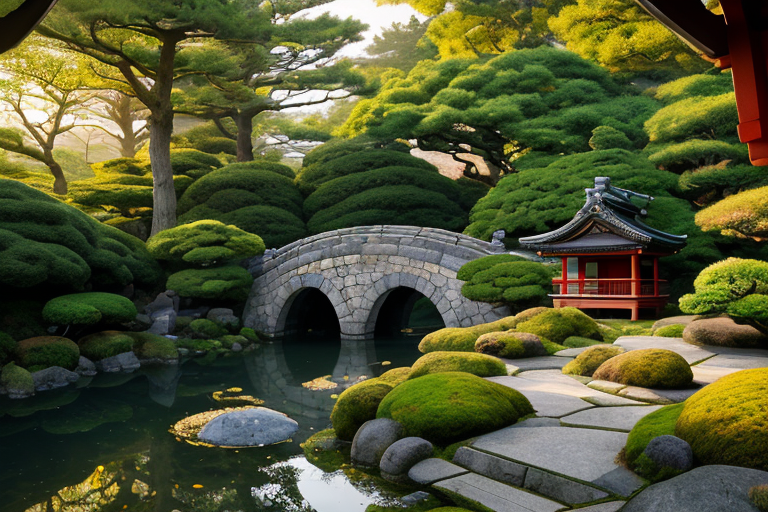
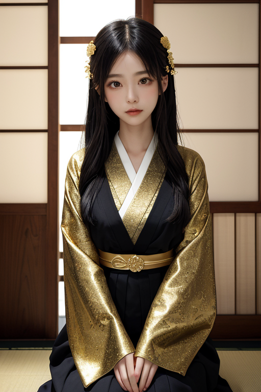
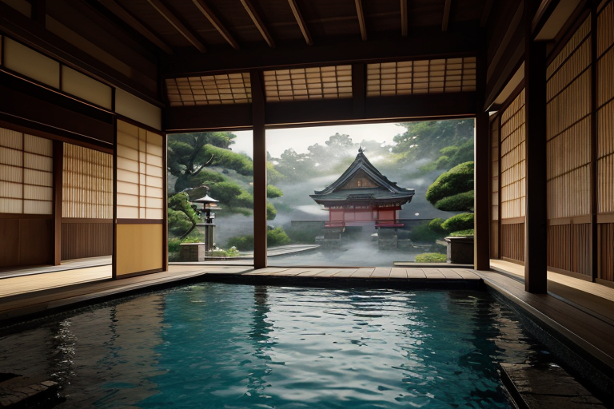
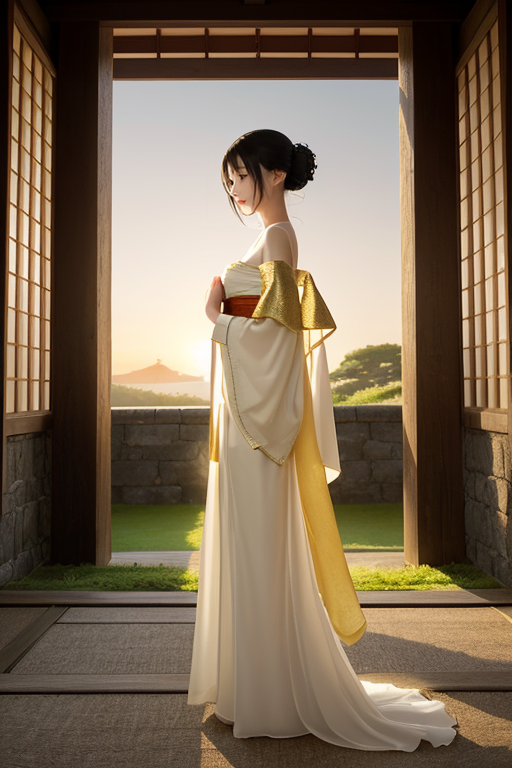
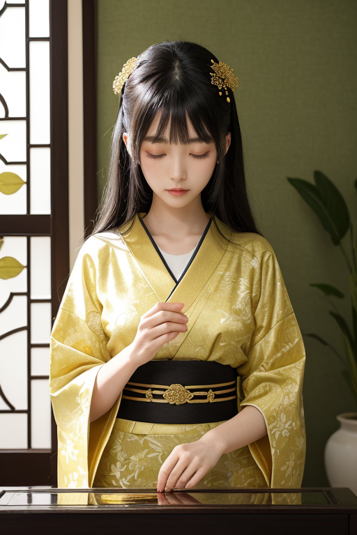

第一章 現実の石川
あなたはまだ気づいていない。この土地にも、王がいることを。
兼六園の霞ヶ池は、朝もやに包まれ、鏡のように静かだった。訪れる人々は、繊細に刈り込まれた松や、計算され尽くした景観の美しさに息を呑む。彼らは知らない。この完璧な均衡が、単なる人間の技だけによるものではないことを。池の畔に佇む一人の男性、イシカリア・アルテは、目に見えない歪み──土地の記憶の軋み、蓄積された人々の祈りの重み──を掌で感じ取り、微かに調整していた。彼の隣では、光の粒を纏った小さな妖精アルティナが、庭園の文化的記憶を、一片の苔むした石からも確かに保全していた。
金沢城の石垣は、幾世代にもわたる職人の確かな技の積層だ。しかしその陰で、時折、過去の悲鳴や戦慄が地層から漏れ出そうとする。アルテは白鷺のように優雅な手つきで、その漏れを塞ぎ、石の持つ「静寂」だけを残す。美は、ここでは守られるべき遺産なのか。それとも、彼が今行っているこの不断の調整そのものが、新たな創造なのか。問いは、彼の無感情だったはずの心に、かすかな波紋を投げかけ始めていた。

第二章「歪みの兆候」
ひがし茶屋街の格子戸に、夕刻の光が金箔のように薄く貼りつく。アルテは二階の座敷に佇み、街全体に張り巡らされた「祈り」の微細な振動を聴いていた。観光客の感嘆、職人の集中、茶を点てる音。それらが織りなす調和は、この町の美を支える基底音だ。しかし今日、その音律に、かすかな不協和音が混じる。輪島の方向から、不安と焦燥の、鋭いスパイクが定期的に届く。伝統の継承が危ぶまれる時、人の心が発する軋みだ。
主席妖精アルティナが、光の粒子をまとって現れた。「主よ、輪島塗の窯元で、後継を断つ決意をした老人がおります。その決意の『重み』が、地域の美意識振動を歪ませ始めています」。地域妖精カナザリアの金箔の輝きも、いつもより翳っていた。アルテは目を閉じた。彼の役目は、地殻の歪みだけでなく、人の心が生むこの種の「文化的断層」の調整にも及ぶ。だが、どう手を加えるべきか。守るべき伝統の形を強固にすることか。それとも、新たな創造への道筋を、そっと整えることか。無感情であるはずの彼の内面に、初めて「逡巡」という感情の原型が、静かに胎動した。

第三章 王の葛藤
金沢城の石垣は、静かに夜露を含んでいた。アルテは白鷺のように佇み、掌に載せた金箔の欠片を見つめる。それはカナザリアから託された、輪島塗の研ぎ出しで削られた微細な破片だ。伝統の美は、完璧なまでの手順の積み重ねで守られてきた。しかし、その完璧さが新たな創造を阻む壁となる時、美は窒息する。
彼は二十一世紀美術館のプールを想い浮かべた。水の底から見上げる光は、伝統的な庭園の美とは異質だった。しかし、そこにも確かな「美意識」が脈打っている。職人たちの逡巡は、この異質さへの畏れなのか、それとも自らの技法の限界への気付きなのか。
アルテは自問する。彼の役割は、歪みを調整し、均衡を保つこと。ならば、古い美と新しい美の間に生じる断層を、彼は埋めねばならない。ただ守るのではなく、創ることを恐れぬための、ほんの少しの「隙間」を。金箔の欠片が微かに震えた。彼の内なる静寂が、初めて「選択」という波紋に揺られていた。

第四章 妖精との対話
金沢城の石垣に、夕陽が金箔を貼るように染めていた。アルティナは、その光の中に浮かぶ微粒子のように、静かに語り始めた。
「私たちは祈りを紡ぎます。職人の指先の震え、筆の一呼吸、轆轤の回転。それら全てが、この土地への祈り。祈りは、形を変えることを恐れません。輪島塗の沈金に新しい文様が刻まれるように、祈りもまた、時代の息吹を吸い込み、形を変えるのです」
アルテは黙って聞く。彼の内側で、守るべき伝統と、創りゆく変化とが、静かにせめぎ合っていた。
「美は、器です」とアルティナは続けた。「完璧な器は、中身を守るためだけにあるのではありません。器そのものが、新たな何かを生み出す『間』となる。金箔の下地に塗られる黒漆のように、『守る』という確かな層があってこそ、その上に『創る』という光が映える。私たちの役目は、その層が脆く崩れないよう、魂の振動を整えること」
ふと、カナザリアの微かな光の粒が、アルテの手元で輪を描いた。それは、職人が漆を塗る際の、あの決して急がない、円を描くような動作に似ていた。
守ること。創ること。その両方を可能にする、ゆるやかで強靭な「間」。アルテは、自らの内なる静寂が、今、その「間」を探り当てようとしているのを感じた。

第五章 微調整と余韻
兼六園の霞ヶ池の水面は、微風一つなく、完璧な鏡となっていた。アルテはその縁に立ち、自らの内面をその水面に映すようにして、王国全域に広がる精神の「歪み」を感じ取っていた。それは物理的な亀裂ではなく、人々の心に生じる、美への渇望と喪失感の間で引き裂かれる、かすかな振動だった。
彼は目を閉じた。金沢の街並み、輪島の工房、能登の海。すべてが一枚の漆器のようにつながり、その表面を流れる感情の波紋を追う。アルテは自らの存在を、職人が漆を塗る際の「間」そのものへと解きほぐしていく。急がない。強制しない。歪みを「消す」のではなく、その振動が共鳴し、やがて自ら調和する方向へ、ほんの少し「傾ける」だけだ。
金箔を貼るには、絶対的な静寂と、息を殺した集中が必要だ。アルテの調整もまた、それと同じ静けさの中にある。ある老婆の手から滑り落ちそうになった輪島塗の椀が、寸前で指に引っかかる。ある若い職人が、行き詰っていた加賀友禅の図案に、ふと窓から差し込む木漏れ日がヒントを与える。それらは「偶然」の衣をまとう、極小の奇跡の連鎖だ。
アルテが目を開けると、水面には逆さの金沢城が、揺るぎなく映っていた。守ることと創ること。その答えは、彼の内なる静寂そのものの中に、最初からあった。彼はただ、その静寂が、この土地の美の層と共振し、永らえるための「間」を、提供し続けるのだ。
あなたの町にも、王がいる。